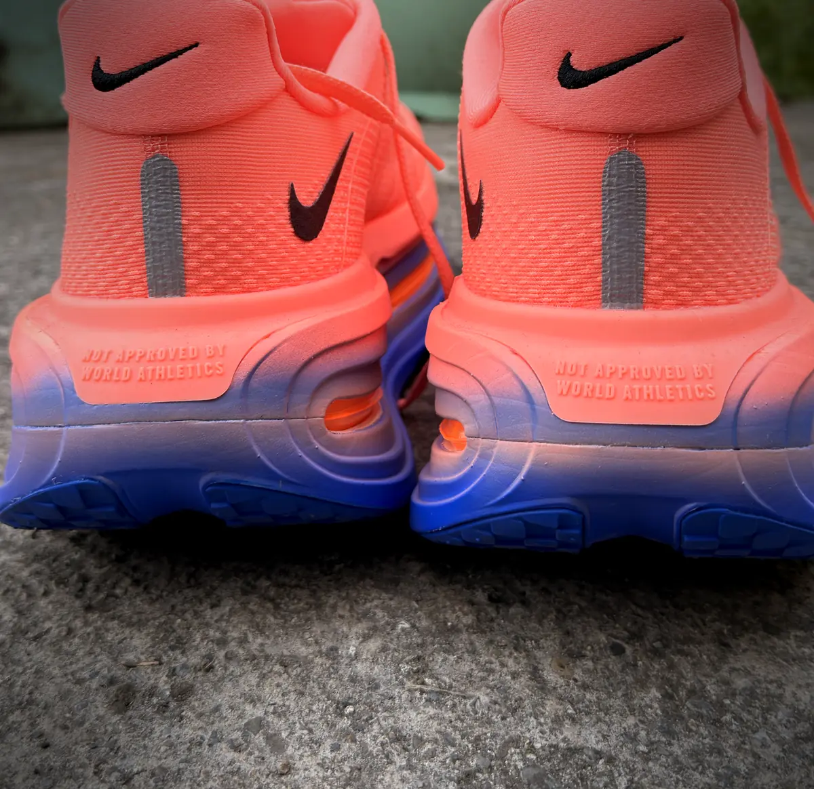
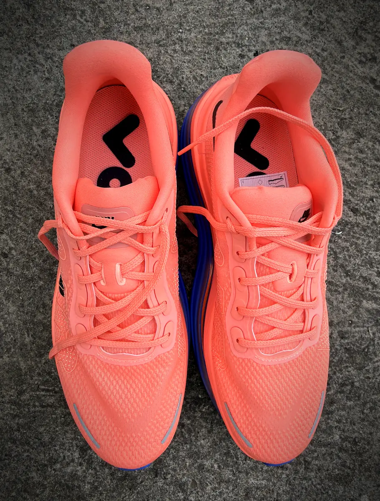

Nike Vomero
Premium
A 100 kg runner’s perspective — maximum cushioning for recovery runs and long road sessions.
The Nike Vomero Premium is an excellent maximum-cushioning shoe for heavier runners who want additional comfort and protection during recovery runs and long training days.
Its enormous 55 mm stack provides an extremely cushioned experience, but that height also has a trade-off: I wouldn’t choose it for sharp turns, technical terrain or race day.
For recovery running, I give it 8/10.
My perspective
I’m Andrew McNamara, an approximately 100 kg ultramarathon runner, triathlete, personal trainer and founder of Iron Miles.
After more than 15 years focused on strength and conditioning, I transitioned into marathon running, ultrarunning and triathlon with a much heavier build than the conventional endurance athlete.
Because of that, I assess shoes differently from a lighter runner. I need cushioning that can manage the additional force going through each stride without sacrificing too much stability or control.
That is where the Vomero Premium becomes interesting.
Maximum cushioning for heavier runners
The Vomero Premium has a massive 55 mm stack, combining full-length ZoomX foam with two Air Zoom units—one beneath the heel and another beneath the forefoot.
For a heavier athlete, that amount of cushioning can be extremely useful during high-volume training. It provides a soft and protective platform for days when the objective is to accumulate mileage without placing unnecessary stress on already-fatigued legs.
I see it as a recovery and long-distance “super shoe” for the heavier runner—not because it is intended for racing, but because of the amount of comfort and protection it provides during training.


Best use
The Vomero Premium is best suited to:
- Recovery runs
- Easy-paced road mileage
- Long, controlled training sessions
- High-volume training weeks
- Heavier runners seeking maximum cushioning
- Days when comfort matters more than speed
This is the type of shoe I would reach for when my legs are carrying fatigue and I want a comfortable, forgiving run.
Stability and turning
The major drawback is the height.
A 55 mm stack places a considerable amount of material between your feet and the ground. Although the shoe uses a broad platform, I would still avoid sharp turns, sudden changes of direction and technical terrain.
It is far more suitable for predictable road routes than uneven surfaces or courses with frequent tight corners.
That doesn’t make it a bad shoe—it simply means it should be used for the purpose it performs best.
Is it suitable for race day?
Personally, I would not choose the Vomero Premium for race day.
It weighs approximately 351 grams in a men’s UK size 9, doesn’t have a carbon-fibre plate and prioritises cushioning over lightweight speed and precise handling.
For racing or faster sessions, I would prefer something lighter and more controlled, such as the Nike Zoom Fly 6.
The Vomero Premium belongs on recovery days and long, comfortable training runs. The Zoom Fly 6 is the stronger option when pace and performance become the priorities.
Use it for the purpose it performs best.Recovery, not race day
Pros
- Exceptional cushioning
- Very comfortable for recovery running
- Protective under a heavier athlete
- Well suited to long road sessions
- Useful during high-volume training
- Responsive ZoomX and Air Zoom combination
Limitations
- Extremely tall platform
- Not my choice for sharp turns
- Unsuitable for technical terrain
- Heavier than a typical performance shoe
- Not intended as a race-day shoe
- Expensive for a specialised recovery trainer
Final verdict
The Nike Vomero Premium is a very good specialised training shoe for heavier runners.
It delivers exactly what I want on recovery days: maximum cushioning, comfort and protection over longer distances. However, its enormous stack makes it less appealing when the route becomes technical or involves sharp cornering.
I wouldn’t use it for racing, but I would happily include it in a shoe rotation for recovery sessions and long, controlled road runs.
A very good specialised training shoe for heavier runners — maximum cushioning for recovery days and long, controlled road runs, but not a race-day or technical-terrain option.
- Best for
- Recovery runs, easy mileage and long road sessions
- Avoid for
- Racing, technical terrain and routes with sharp turns
- Runner perspective
- Approximately 100 kg endurance athlete
This review is based on genuine personal use. I purchased and used the Nike Vomero Premium independently and had no commercial relationship with Nike when these experiences took place.
If an affiliate link is added to this page in the future, Iron Miles may receive a commission from qualifying purchases at no additional cost to the reader. Commercial relationships do not determine our verdicts.
Runner’s note
Every runner is different. A shoe that worked well for me may feel different depending on your foot shape, running mechanics, training history and intended use. Whenever possible, try the shoe and introduce it gradually before relying on it.

Strength athlete turned endurance runner. Came to running at around 100 kg and kept going — half marathon, the Great Limerick Marathon, and the 63 km Connemara Ultra. Coaches and runs with the Iron Miles Club in Limerick.